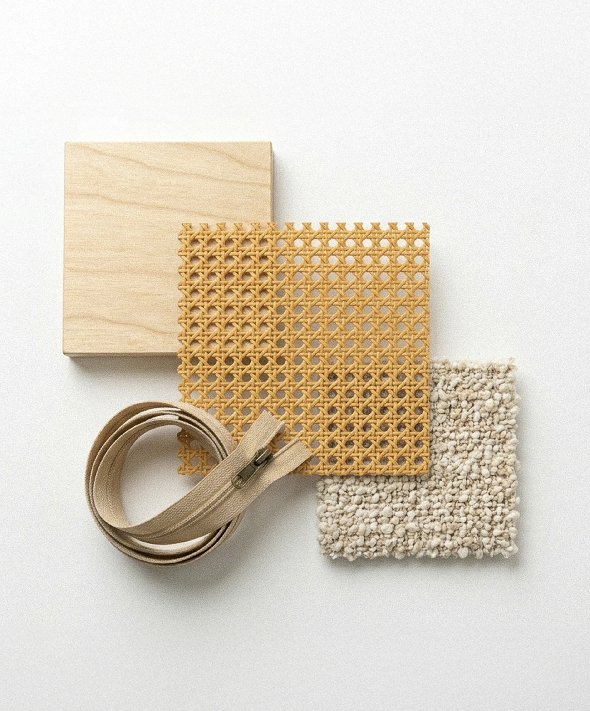
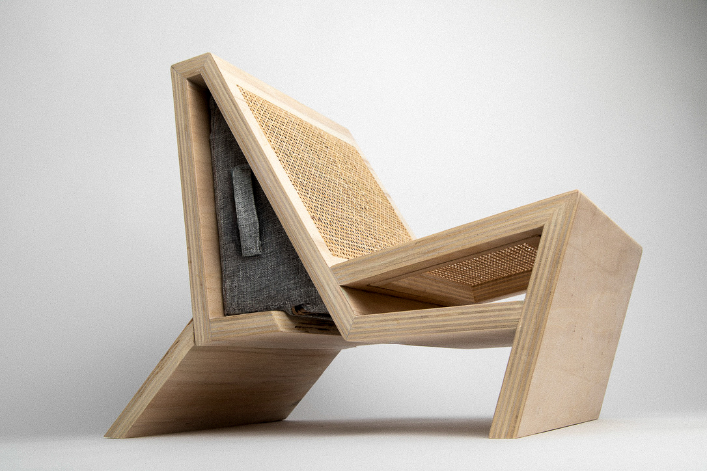

Aora
Catégorie
Mobilier
Année
2025
Matériaux
Bois & rotin
Dimensions
590 x 950 x 770 MM
Collaboration
Victor Renaud, France Seigneurie & Lilou Moinard
Les nouvelles façons de travailler favorisent des postures plus libres, souvent éloignées de la chaise de bureau classique. Comment proposer une assise adaptée à ces usages, tout en garantissant confort et stabilité ?

Recherches & Sketches

Pour les itérations, nous sommes partis de la matière et du lieu d’usage : les bibliothèques universitaires. L’objectif était de créer une rupture, tout en s’intégrant naturellement à l’environnement.
Le Processus


Nous avons réalisé une maquette à l’échelle 1:2, offrant une approche proche du réel dans la mise en œuvre et le travail du bois, tout en nous permettant d’affiner la conception de l’objet.
La Maquette



Aora est un fauteuil bas pensé pour le travail décontracté. Sa structure en contreplaqué forme une assise profonde et stable, adaptée à différentes positions. Le cannage allège visuellement l’ensemble tout en assurant confort et respirabilité. Un espace de rangement intégré sous l’assise accueille les objets du quotidien, sans encombrer l’espace.